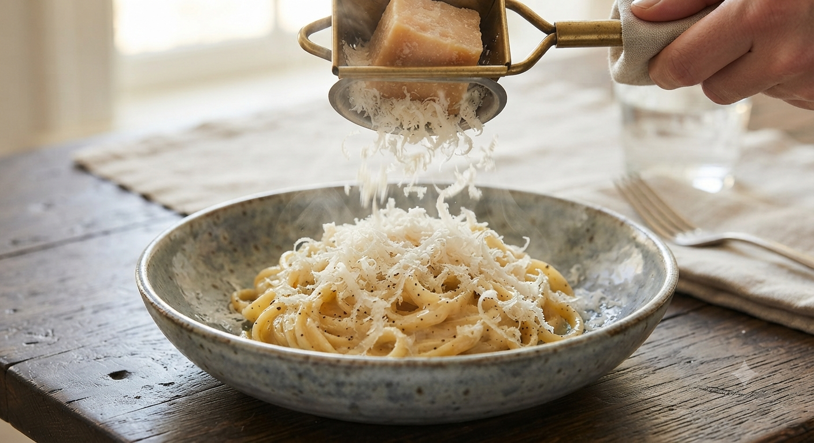
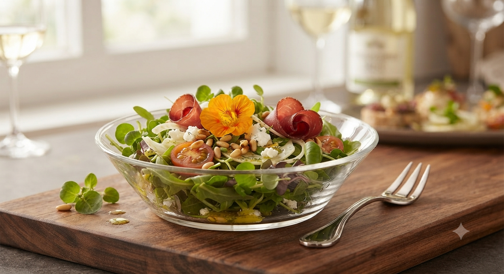
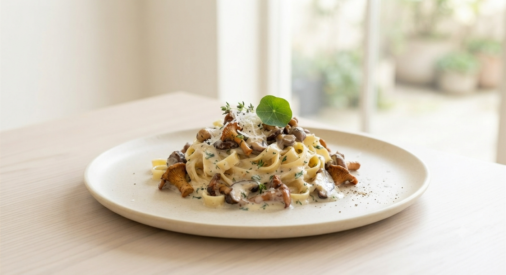

岩手・盛岡周辺パスタ最高評価
シモネッタが選ばれる3つの理由

「チーズをかけてもよろしいですか？」店主が目の前で削り出す濃厚なチーズ。香りと見た目のアトラクション性が、食事を一段上の体験へ引き上げます。

自家製パテや砂肝、白いんげんなどが贅沢に乗ったサラダ。鮮度抜群のシャキシャキ野菜を、秘伝の自家製ドレッシングでお楽しみいただけます。

しっかりとしたニンニクのコクとトマトの辛み。盛岡周辺で「最上級」と称される、個性豊かで力強い味わいがリピーターを離しません。
お客様からの「あればいいな」を実現。雫石の四季折々の旬野菜をふんだんに取り入れ、メイン料理が季節ごとにガラリと変わる、心も体も満たされる限定ランチコースが新登場。
その時期に最も美味しい雫石の旬野菜と、厳選食材を組み合わせた、シモネッタならではの創作メインが一皿に。
名物の特製サラダや手作りデザート・ドリンクもセットにしつつ、お腹と心にちょうどいいボリューム感に調整したスペシャルなコース。
火・木・土・日の営業日限定で、まもなく提供開始予定。常連様からのご要望に応えて開発された、今だけの要チェックプラン。
最新の提供開始日や詳細について
コースの切り替わり時期やご予約の空き状況は、お電話にてお気軽にお問い合わせください。

店主・下黒沢が2017年に母と二人三脚でオープン。看板メニューの「カルボナーラ」に使用するパンチェッタは、豚バラ肉をじっくり塩漬け熟成させた自家製です。
店名「シモネッタ」はイタリアの愛らしい女性の名前から。地元雫石の歴史を大切にしながら、一人のお客様、一皿のパスタに全力を注ぐため、現在はワンオペレーションでの営業を貫いています。
Customer Reviews
「サラダの存在感がすごい！」
セットのサラダが存在感ばっちり。パスタに店主が「チーズかけてもよろしいですか？」と尋ねる演出はアトラクション的で楽しく、パスタも最高に美味しかったです。
「どれを食べても絶品。」
パスタ好きなのでどれを食べてもおいしく、うれしい限り。サラダとパテも絶品。いつもランチだけどワインに合わせたい、雫石の名店です。
一皿ずつ丁寧に調理するため、1日の提供数には限りがございます。
ご来店前のお電話でのご確認を強くおすすめしております。
ADDRESS
岩手県岩手郡雫石町上町西９０
BUSINESS HOURS
11:20 〜 13:30 /17:00 〜 20:00
CLOSED
月曜日(水曜日・金曜日のディナーは休業）